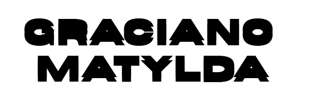
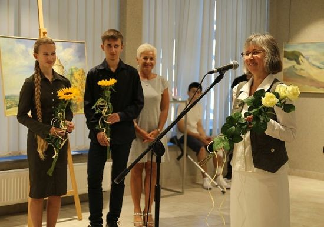
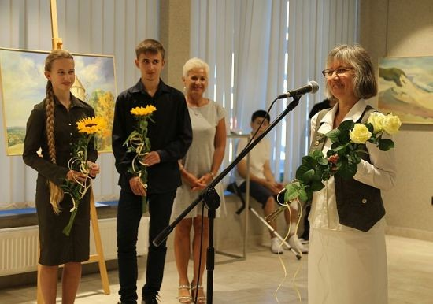

Mes projets personnels


Association de création pluridisciplinaire
Ici tu pourras rajouter plusieurs projets avec images, textes, etc.
- Ekspozycja „Cztery barwy palety” ... (texte d'origine conservé)
 



Tekst o wystawie TWARZOWISKO ... (texte d'origine conservé)